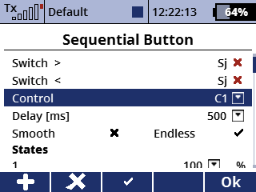
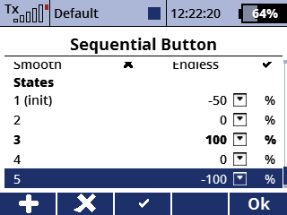

Mit dieser App kann eine Folge von Zuständen (Ausschlägen) definiert werden. Der aktuelle Zustand kann mit mit zwei Schaltern erhöht und verringert werden.
Der aktuelle Ausschlag wird auf einem virtuellen Geber ausgegeben.
 
Mit den Schaltern kann zum nächsten/vorherigen Zustand gewechselt werden.
Auswahl eines der zehn Geber zur Ausgabe des aktuellen Zustands.
Verzögerung des Gebers in ms.
Die Ausgabe wird optional geglättet.
Endlos bedeutet, dass der Zustand vom Ende an den Anfang springen kann und umgekehrt.
Die Liste der Zustände. Für jeden Zustand kann hier der Ausschlag festgelegt werden.
Der aktuelle Zustand wird in fetter Schrift dargestellt.
Der initiale Zustand (bei Initialisiertung der App) kann mit F(3) ausgewählt werden und wird mit (init) gekennzeichnet.
Die Anzahl an erlaubten Zuständen liegt zwischen 1 und 20.